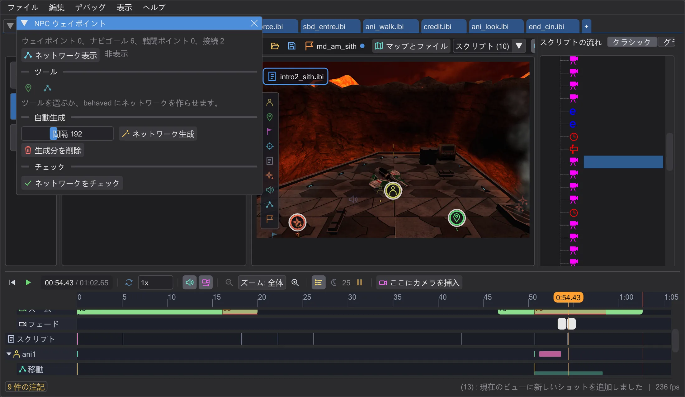

マップとシーン
NPC ウェイポイント
NPC が追いかけたり逃げたりするときに歩くネットワーク。手で置くか自動で作り、確認します。

マップのツールバーの NPC ウェイポイント で開きます。ネットワーク表示 で経路を描きます。緑は手動(target)、青は自動(ナビゴールと戦闘ポイント)、オレンジはジャンプ(targetJump)。
- ウェイポイントを置く:床をクリックすると、新しい点が直前の点とつながります。Shift+クリックで新しい経路、Esc で終了。
- 接続:2 点をクリックで接続(Ctrl:ジャンプ)、接続済みの 2 点をクリックで切断。1 点の接続は最大 4 本です。
- ネットワーク生成 は歩ける床にウェイポイントを配置して接続します(間隔:オリジナルのレベルは約 230)。1 回で元に戻せます。生成分を削除 は自動で作ったものだけを削除し、手動のものは残ります。
- ネットワークをチェック はゲームが拒否するものや NPC が使えないものを見つけます。問題をクリックするとそこへ移動します。